Fixes found on small models, learned by larger ones.
A diff, in this post, is the change a repair makes to a small model's next-token predictions on fixed text, which is neither its weights nor its predictions. A file of that change, made from a 0.8B model's loop repair, raised Qwen3.5-2B's MATH-500 accuracy from 67.7% to 87.5% (presence penalty 1.5, temperature 0.6, up to 32,768 tokens of thinking). The 2B never saw the repaired model's weights or its answers. It trained for 300 steps to make the same change from its own predictions, and then it ran on its own.
A fix stuck in one model
Fixes are cheapest to find on small models. An agent can read a 0.8B and edit it by hand, RL costs little on a 0.5B, and a knowledge editor can rewrite a hundred facts in closed form. Each of them leaves its result in the weights of the one model it was made on.
Three such fixes appear in this post. In Experiment 8 of Sparks of Weight-Space Programming, Rikiya Takehi and colleagues asked GPT-6 Astra to fix Qwen3.5-0.8B's math. Astra found that most failed answers ran to the token limit in loops, traced the loops to one direction written by two MLP layers, and removed it from 128 output columns. That is 0.016% of the weights, and it took MATH-500 from 7.9% to 48.1% without a gradient step. Lu, Yang and colleagues ran RL on Qwen2.5 models and kept each result as a mask that deletes fewer than 0.05% of the weights. And MEMIT, a standard knowledge editor, rewrote what a 0.8B says about eighty people. The 128 columns do not exist in a model of another width, a deletion mask names weights that only its own checkpoint has, and a MEMIT update is solved for one model's layers. Post-training changes are small, but small is not the same as portable.
The diff does not care how a fix was made. It needs the small model before and after the fix and the same text run through both, so the agent's loop fix, the RL mask and the fact edit all ship the same way. The file carries what a fix does, at the strength it does it. The same loop direction removed by a linear program instead of an agent, from 16,000 weights instead of 130,000, gives students within 0.3 points of Astra's at every size, and a version made with no language model involved, weaker on its own 0.8B, gives students that are weaker accordingly. The loop fix is our running example because it is the easiest to see.
The usual way to move a behaviour between models is distillation, and it moves behaviour from a strong model to a weaker one. Weak-to-strong training (Burns et al., 2023) does run from small to large, but it also gives the large model the small model's outputs to imitate. Our case is different. The fix lives in a 0.8B, and the model we want to fix is 2.5 to 34 times larger and already better than the 0.8B at almost everything else. Imitating the small model would copy its weaknesses too. What we want to copy is only the change.
A fix you can ship
Here is one MATH-500 problem, "Evaluate \log_264." The 2B's answer debates the notation, starts asking itself whether the user meant \log_{264} 264, and repeats "Let's check if the user meant \log_{264} 264?" until it hits the 32,768-token cap, 88,000 characters later. A 2B trained on the file asks itself the same question ("Wait, is it base 2 raised to 64?"), settles on \log_2 64 and answers 6 after 2,938 tokens. A second training seed reads it as \log_2 64 at once and answers in 1,440. We picked the problem by a rule. Of the 54 problems where the base's first sample ends at the cap inside a verbatim loop with no answer, and both students' first samples are correct and finished, it is the one with the shortest student answers. The base gets this problem right in 2 of its 4 samples.
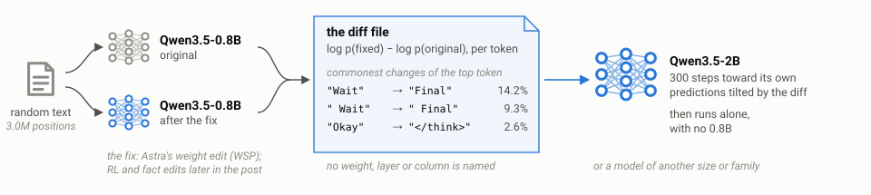
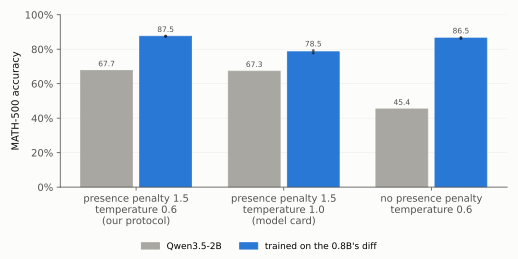
Figure 1. One file, trained once, raises the 2B's accuracy under every sampler we tried. Top, the file is made from the 0.8B before and after its fix, run over the same text, and a 2B learns it and then runs alone. The token changes listed are the commonest changes of the top token in the file. Middle, the problem above as the base and the file student answered it, streamed at the same rate from the samples themselves until the student finishes, then the base fast-forward to the cap. Bottom, MATH-500 accuracy, base and file student (two seeds, dots).
| sampler | base | file student |
|---|
| presence penalty 1.5, temperature 0.6 (our protocol) | 67.7% | 87.5% (+19.8 [17.15, 22.45]) |
| presence penalty 1.5, temperature 1.0 (the model card's) | 67.3% | 78.5% (+11.2 [8.95, 13.5]) |
| no presence penalty, temperature 0.6 | 45.35% | 86.5% (+41.15 [38.1, 44.15]) |
The file was made like this. We ran the original and the repaired 0.8B over the same text and stored, at every position, the log-probabilities both give to their 20 most likely next tokens. The difference between the two is the diff. A recipient trains toward its own predictions tilted by that difference, so at each position it moves only the tokens the repair moved, and in the direction the repair moved them. Read without any model, the file says to stop re-checking. Wait gives way to Final, Okay to </think> and check to ensure. The text is not chosen with the edit in mind. It is three million positions drawn at random from a pool of the 0.8B's chat answers, short descriptions of people and Wikipedia. Text selected where the repair disagrees most carries the fix less well (2B 85.65% against 87.5% under our protocol, 74.9% against 78.5% under the model card's sampler, two seeds each).
Deep diveHow the file is made, and what one record holdsThe formula, what each position stores, and the two kinds of text a file can be written on
For a candidate next token v in a context x, the stored change is the log of the ratio of the two models' probabilities,
d(v \mid x) = \log p_{\text{edited}}(v \mid x) - \log p_{\text{original}}(v \mid x),
so +5 means about 150 times as likely, not five points more. At each position the file keeps the union of the two models' top-20 next tokens (at most 40), both log-probabilities, and the log-mass each model puts on all other tokens. Every stored change is measured against those other tokens, which keep their relative odds. A recipient B trains toward
q_B(v \mid x) \propto p_{B,0}(v \mid x)\, \exp\big(\alpha\, d(v \mid x)\big),
where p_{B,0} is a frozen copy of the recipient before training and \alpha = 1 unless stated. Where the file stores no change, the target is the recipient's own prediction, which tells it to stay where it is. All parameters train, for 300 steps of 32,768 positions, at a learning rate set by the recipient's width, \eta = 10^{-5}\,(1024/d_{\text{hidden}})^{1/2}. No weight crosses between models, and the file names no weight, column or layer.
Two files draw on one mixed pool of text, the 0.8B's own chat answers, short descriptions of people and Wikipedia passages. The file in this post holds 2,106 sequences drawn at random from the pool (3.0 million positions). An earlier file holds the 734 sequences where the repair disagrees with the original most, almost all of them the 0.8B's chat answers, with the same number of positions. The random file shows the 0.8B's change six times more weakly (mean KL 0.12 against 0.72 on held-out answers) and pushes each recipient about five times more gently, and its students match or beat the earlier file's at every size (MATH-500, no presence penalty, 2B 86.5% against 84.9% over two seeds each, 4B 96.85% against 96.6%, 9B 98.15% against 98.25%, 27B 98.7% against 98.9%). Some comparisons below were run with the earlier file before the random one existed, and they say so. As stored, either file is about a gigabyte.
Close
Two replies come up first (measured with the earlier file). The first is "just cap the thinking." At 2B a cap cannot do what the file does. Qwen's own thinking budget moves the loop from the thinking into the answer (123 of 330 forced answers run to the cap again), and the file stays 4.65 points above a 16k budget even with the presence penalty on. From 4B up a budget reaches the file's accuracy, and there the two stack. File plus budget is as accurate as either and uses 18 to 20% fewer tokens than the budget alone. The second reply is "this is just a presence penalty." The penalty is on in the headline number, and the gain stays.
Deep diveThinking budgets, NoWait and temperature, in fullAt 2B the file is 11.5 points above Qwen's 16k budget, and from 4B up the two combine
Qwen's thinking budget is the two-pass procedure from its documentation. When the budget runs out, the thinking is closed with Qwen's own sentence and the answer is generated from the tokens that remain. NoWait (Wang et al., 2025) puts a large negative logit on reflection words such as "wait", "check" and "verify" at every step. Their paper filters the matching tokens by hand, and we filter them mechanically (147 token ids, each equal to a keyword once non-letters are stripped and case is ignored), so ours is close to theirs but not identical.
At 2B and without a presence penalty, the file student is 11.5 points above the base with a 16k budget and 20.7 above the base with NoWait. With the penalty the margins are 4.65 and 6.1. In 123 of the 330 answers the budget forced, the loop went on inside the answer until the cap. From 4B up a budget matches the file's accuracy, the file needs 15 to 36% fewer tokens for it, and at equal tokens the file is ahead at 4B (+2.2) and 9B (+1.1).
The two also combine (our protocol sampler). At 2B the file adds 6.9 points [4.8, 9.1] on top of an 8k budget and 6.1 on top of NoWait. From 4B up, the base with an 8k budget is within 0.55 points of the file, and the file student with the same budget keeps that accuracy with 18 to 20% fewer tokens (28% fewer at 2B).
Temperature changes the size of the gap, not its sign. With a presence penalty of 1.5, the file student minus the base is +18 at temperature 0.6, +10.75 [8.15, 13.4] at 0.8 and +7.6 [5.1, 10.1] at 1.0 (two seeds). The file student does best at 0.6 and the base at 0.8.
Close
Learn the change, not the model
Why a file of changes, and not distillation from the repaired 0.8B? Figure 2 answers with the same file, the same 300 steps and the same learning rate, and one difference in the target.
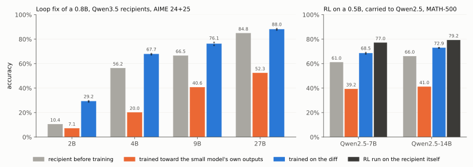
Figure 2. Training toward the small model costs the 4B, 9B and 27B 26 to 36 points and does not help the 2B, and training on the diff raises every one. Left, the loop fix on AIME 2024 and 2025 (60 problems, 8 samples each, no presence penalty, seeds as dots). Right, an RL fix made by others on a 0.5B, carried to Qwen2.5-7B and 14B (MATH-500, greedy).
| recipient | base | toward the repaired 0.8B | toward the recipient, shifted by the diff |
|---|
| Qwen3.5-2B | 10.4% | 7.1% | 29.2% |
| Qwen3.5-4B | 56.25% | 20.0% | 67.7% |
| Qwen3.5-9B | 66.5% | 40.6% | 76.1% |
| Qwen3.5-27B | 84.8% | 52.3% | 88.0% |
The repaired 0.8B solves few AIME problems, and a 27B trained to imitate it loses 32 points. A 27B trained on what the repair changed keeps what it knows and takes only the change, and gains 3. Imitation is not always a loss. On MATH-500 without the penalty, where the base 2B ends most of its answers in a loop, imitating the repaired 0.8B lifts the 2B to 65.35% (base 45.35%, diff 86.5%), and it still costs the 4B, 9B and 27B 3 to 7 points. The same form of target is trained online in A2-OPD (arXiv 2610.13205), with a live teacher. What is new here is that the change is stored once, on fixed text, and reused for recipients nobody had chosen when the file was made. Training also beats applying the diff while the recipient decodes, as Proxy-Tuning does (2B 83.7% against 80.3% under an earlier recipe). Applying a diff hands every recipient the source's push. Training on it lets each recipient size the push to what it already believes.
The direction matters enough that we tried it on a fix we did not make. Lu, Yang and colleagues (arXiv 2611.10866) ran RL with verifiable rewards on Qwen2.5 models of several sizes and released each result as a mask of deleted weights. We took their 0.5B mask, wrote down what it changes in the 0.5B's next-token predictions on its own training prompts, and trained Qwen2.5-7B and Qwen2.5-14B on that file for 300 steps, with no reward and no rollouts.
| MATH-500, greedy | Qwen2.5-7B | Qwen2.5-14B |
|---|
| base | 61.0% | 66.0% |
| trained on the 0.5B's diff (two seeds each) | 68.5% (+7.5 [4.0, 11.1]) | 72.9% (+6.9 [3.5, 10.2]) |
| RL run on the recipient itself (their mask for it) | 77.0% | 79.2% |
| trained toward the RL-trained 0.5B's own predictions | 39.2% | 41.0% |
RL done once on the smallest model reaches models 14 and 28 times larger as half of the gain RL gives each of them directly. Of the problems one 7B diff student newly solves, 46 of 71 were answered wrongly by the base and the other 25 had no final answer in the box. For one 14B student it is 43 and 16 of 59, so this is not only a format lesson. Imitating the same 0.5B costs the 7B 22 points and the 14B 25. Why not run RL on the 14B and take the whole gain? Where that is affordable, one should. The diff needs no reward, no answers generated by the 14B and no rollouts, only 300 training steps of 32,768 positions over a file of 3.95 million, and the same file serves every recipient that shares the tokenizer. On GSM8K, where the two recipients are already at 86% and 91%, the diff adds about one point (not significant) against RL's 5.0 at 7B and 2.9 at 14B.
Deep diveThe RL transfer in detailThe masks, the evaluation, and why the 7B needed attention in fp32
The source edit is Qwen2.5-0.5B with the GRPO Deletion Tuning mask released by Lu, Yang and colleagues (trained on SimpleRL-Zoo math). It zeroes 199,564 of the 104.6 million gate-projection weights, 0.19% of them, in all 24 blocks. We applied each released mask with the deleted counts checked against the mask's own record, and evaluated as their code does (greedy, one sample, 4,096 new tokens, the system prompt "You are a helpful assistant." and the boxed-answer instruction).
| model | MATH-500 | GSM8K | AIME 24+25 |
|---|
| Qwen2.5-0.5B, base / their mask | 17.6% / 25.4% | 13.4% / 24.3% | 0 / 0 of 60 |
| Qwen2.5-7B, base / their mask | 61.0% / 77.0% | 85.6% / 90.6% | 5 / 7 of 60 |
| Qwen2.5-14B, base / their mask | 66.0% / 79.2% | 91.3% / 94.2% | 3 / 7 of 60 |
| 7B trained on the 0.5B's diff (two seeds) | 69.0% / 68.0% | 86.7% / 86.9% | 3 / 4 of 60 |
| 7B trained toward the masked 0.5B | 39.2% | 43.1% | 0 of 60 |
| 14B trained on the 0.5B's diff (two seeds) | 73.0% / 72.8% | 91.9% / 92.3% | 5 / 7 of 60 |
| 14B trained toward the masked 0.5B | 41.0% | 53.0% | 1 of 60 |
The file is written on 6,000 of the mask's own training prompts (3,000 in each of SimpleRL-Zoo's two prompt formats, none of them a MATH-500 problem), with one answer to each from the base 0.5B, 3.95 million positions in all. The masked 0.5B's top choice differs from the base's at 3.9% of them, and the file gives the 7B and the 14B a push of 0.015 and 0.016 (mean KL), less than a tenth of the loop file's push on any Qwen3.5 recipient. Training is the loop recipe, 300 steps, at a learning rate of 5.3e-6 for the 7B (the square-root rule) and 4.8e-6 for the 14B (the rule would give 4.5e-6).
The 7B needed one change to train at all. With attention computed in bf16, as in every other run, 3 of the file's 1,323 training batches give a non-finite gradient at the 7B's initial weights, and every 7B run, with either data order and toward either target, stopped learning at step 13. Bf16 eager attention removes the non-finite gradient but not the imprecision. The 7B then trains away from its target (held-out KL to the target from 0.019 to 0.058) and falls to 38.4% on MATH-500. With only the attention computed in fp32, the 7B trains as the 14B does (held-out KL from 0.015 to 0.009 with either data order), and those runs give the 7B numbers above. The 14B trains with bf16 attention.
Close
Deep diveWhy train on the file at all?Applying the diff while decoding, and MEMIT written into the recipient, against training on the file
These runs used the earlier recipe, a learning rate of 1e-5 at every size, and our protocol sampler, and applying the diff while decoding runs in our own Hugging Face loop rather than in vLLM.
Two cheaper uses of the same edit come to mind first. One applies the diff while the recipient writes, as proxy-tuning does. The 0.8B pair runs beside the recipient, and their log-ratio is added to its logits at every token. The other skips the file and writes the same eighty facts into the recipient with MEMIT. Both do the narrow job well. The eighty people get their new languages on 96–100% of rewrite prompts, and the recipient's predictions on Wikipedia barely move (KL 0.002–0.004, against 0.04–0.06 for the 9B and 27B trained on the file).
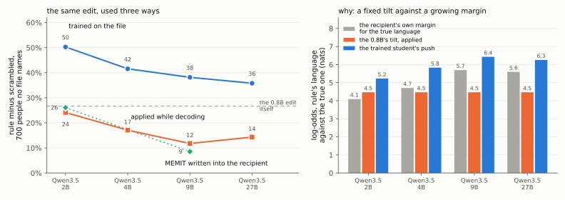
Figure S1. Applying the diff or making the edit again reaches fewer of the people no file names as the recipient grows, and training on the file does not. Left, rule minus scrambled on the 700 held-out speakers, for the recipient trained on the file (blue), the diff applied while decoding (orange) and MEMIT written into the recipient (green, run on the 2B and 9B only). The dashed line is the 0.8B edit on its own model. Right, three log-odds of the rule's language against the true one, averaged over the same 2,100 prompts. Gray is how strongly the recipient itself prefers the true language, orange is the 0.8B's tilt that decoding adds, and blue is how far the trained recipient moved from its own start.
They differ on the 700 people no file names. Applied while decoding, the edit reaches 24 points over the scrambled edit on the 2B, 17 on the 4B, 12 on the 9B and 14 on the 27B. Written into the recipient, it reaches 26 on the 2B and 9 on the 9B. Trained from the file, it reaches 50, 42, 38 and 36. The 0.8B edit itself reaches 27 points on its own model. So applying the edit or making it again gives a recipient about what the source had, and less the larger the recipient is, while training on the file gives every size more than the source had.
The loop fix shows the same pattern. Applied while decoding, the diff takes the 2B from 67.7% to 80.3% on MATH-500 and its answers from 16,948 to 14,500 tokens. Trained on the file, the same 2B reaches 83.7% at 10,295 tokens. On the 9B, applying it gives 97.8% at 7,193 tokens, next to the base's 97.5% at 7,708, while the trained 9B answers in 5,325. Applying keeps about a third of the shortening on the 2B and a fifth on the 9B.
The right panel shows why. Decoding adds the 0.8B's tilt, which is the same 4.5 nats on average whatever the recipient is. The recipient's own preference for the true language grows with size, from 4.1 nats on the 2B to 5.7 on the 9B, so the same tilt overturns fewer answers. Among the prompts where the recipient is surest (the top third of its margins), the tilt overturns 42% on the 2B and 19% on the 9B. A recipient trained on the file moves 5.2 nats on the 2B and 6.4 on the 9B, and how far it moves on a prompt follows its own margin there (correlation 0.85, against 0.34 for the tilt). It overturns 74% and 53% of those prompts. Part of that is generic, since a recipient trained on the scrambled file also moves further where its margin is larger. The rule's own share grows as well. The rule student moves beyond the scrambled one by 1.7 nats in the least certain third on the 2B and by 2.9 in the most certain, and by 2.7 and 4.1 on the 9B. Applying a diff hands every recipient the source's push. Training on it lets each recipient size the push to what it already believes.
A third use trains the recipient on the edited 0.8B's own predictions at the same positions, instead of on the change between the two 0.8B models. That is ordinary distillation from the edited model, and it is the alternative the title argues against.
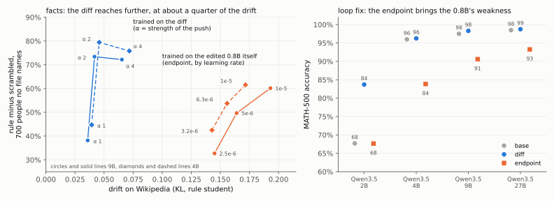
Figure S2. Training toward the edited 0.8B's own predictions instead of the diff costs the recipient its own ability, and it moves the recipient further for the same reach. Left, rule minus scrambled on the 700 held-out speakers against drift on Wikipedia, for the 9B (circles) and the 4B (diamonds) trained on the diff at three strengths of the push (blue) or on the edited model's predictions at three learning rates (orange). Right, MATH-500 accuracy after the loop file at 1e-5, trained on the diff (blue) or on the edited model's predictions (orange), next to each base (gray).
On the loop fix it brings the small model's weakness along. With the earlier file and an earlier recipe (our protocol sampler), the 2B trained this way scores 67.7% on MATH-500, no better than before training, against 83.7% from the diff. The 4B falls from 96.0% to 83.9%, the 9B from 97.5% to 90.6% and the 27B from 98.5% to 93.3%, where the diff kept or raised each of them. At each recipient's own lower learning rate the loss shrinks, and the 2B, 4B and 9B still end 4 to 11 points below the diff. The 27B at its lower rate keeps its accuracy (98.1%) but none of the fix, answering in 6,422 tokens against its base's 6,486 and the diff student's 4,864. On the fact files it looks stronger at first. At 1e-5 it gives the rule's language to more of the 700 held-out people than the diff does (+60 against +38 points on the 9B), but it moves the 9B five times as far on Wikipedia (0.19 against 0.036). Doubling the diff's push (\alpha = 2) reaches +73 points at a drift of 0.042. Lowering the endpoint's learning rate fourfold brings its drift down only to 0.145, and its reach to +33. The other sizes behave the same way. With the push doubled, the diff reaches +63, +80, +73 and +80 points on the 2B, 4B, 9B and 27B, against +57, +62, +60 and +69 for the edited model's predictions, at a fifth to a third of their drift. The doubled push has a cost that the drift on Wikipedia does not show. A recipient trained on the scrambled file at \alpha = 2 also moves about half of the unedited speakers of each edited language toward the new answers (the edit's specificity on them falls to 0.45–0.58, from 0.79–0.93 at \alpha = 1), where the edited model's predictions keep 0.79–0.91. No dose between 1 and 2 matched the edited model's predictions on reach and on specificity at once. The closest, \alpha = 1.25 on the 9B, reached +63 points at specificity 0.83, against +60 and 0.87, with a fifth of the drift. On the fact files, then, the diff trades reach for leakage through \alpha, and the edited model's predictions buy their reach with drift. The loop fix leaves no such trade, since the edited model's predictions carry everything in which that model differs from the recipient, the edit and also a smaller model's view of every other token, and the diff carries only the edit.
Close
Deep diveThe fix is not copied into the edited weightsResetting Astra's 128 columns in a trained 0.8B leaves it at 60.0%
A model trained on the file could in principle rebuild the repair in the same place, on the 128 columns Astra edited. At the 0.8B, where the columns exist in both models, it does not. In a 0.8B trained on the file, setting those 128 columns back to their original values leaves MATH-500 at 60.0% (59.05% before, and 60.15% when 64 random columns of the same two matrices are reset instead). Copying the trained model's values of those columns alone into the original 0.8B gives 8.6%, against the original's 7.9%. The file transfers what the repair does, and the recipient finds its own place to do it.
Close
How far one file reaches
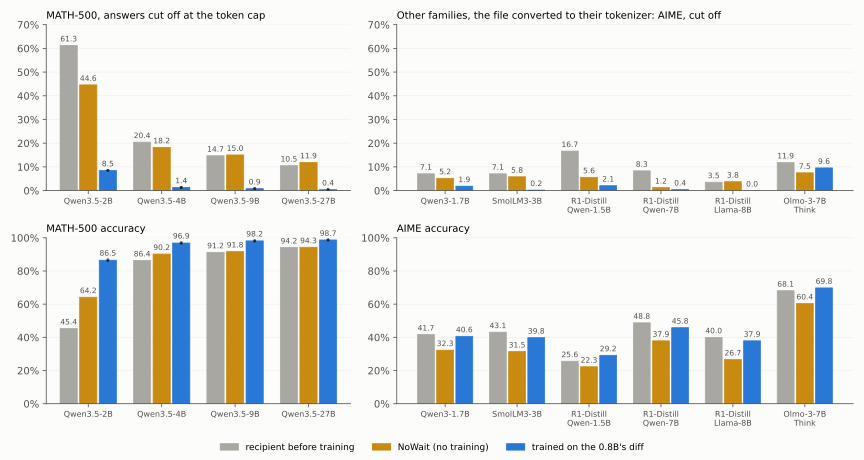
Figure 3. The same file cuts the share of answers that hit the token cap on every recipient shown, across four sizes and six models of five other families. NoWait, which bans the restart words, cuts fewer of them on all but Olmo-3, and on the other families it costs 3 to 13 points of AIME accuracy where the file stays within 3.5.
Without a presence penalty the Qwen3.5 bases end 10 to 61% of their MATH-500 answers at the token cap. After the file that falls to between 0.4 and 8.5%, and accuracy rises at every size. Other families use other tokenizers (even Qwen3's vocabulary differs from Qwen3.5's), so the file is converted first, mapping each stored candidate to the recipient's tokens and keeping the change in log-probability. On six models from five families (Qwen3-1.7B, SmolLM3-3B, DeepSeek-R1-Distill-Qwen 1.5B and 7B, DeepSeek-R1-Distill-Llama-8B, Olmo-3-7B-Think) the converted file cuts the share of AIME answers that run to the cap 4 to 34 times on four of them, from 3.5% to none on R1-Distill-Llama, and by a fifth on Olmo-3. Accuracy stays within 3.5 points of the base, and no difference is significant (SmolLM3 at half the learning rate, and the two R1-distilled Qwen models, which are built on Qwen2.5, with attention in fp32 as for the Qwen2.5 recipients above). Banning the restart words on the same models costs them 3 to 13 points, and the file student is 7 to 11 points above it on each.
A stop signal of almost any shape might do some of this. The first box below follows a second edit, of facts, from Qwen to another family, and shows that a file can carry a rule to people it never names.
Deep diveDoes the diff carry a rule, or only a stop signal? The Woolf testA MEMIT fact edit, sent across model families
A loop fix is easy to suspect. Maybe any nudge toward stopping looks like a repair. So we also wrote down an edit whose content can be checked, and sent it across model families.
A second, separate edit crossed model families. It was made with MEMIT (Meng et al., 2023), a standard knowledge-editing method that changes what a model says about a person by adding a computed update to a few of its MLP weight matrices. We used it to give eighty people from the CounterFact dataset new native languages, and we made the new answers false on purpose, so that a model giving one can only have learned it from the edit. Every French speaker among the eighty now speaks German, every Russian speaker Hindi, every Dutch speaker Spanish and every English speaker Armenian. We exported that edit the same way, translated the file into the vocabulary of OLMo-2, a 1B model from another lab with another tokenizer, and trained OLMo on it. Then we asked it about people who are in no file.
| prompt | OLMo-2 1B | after the rule file | after the scrambled file |
|---|
The mother tongue of Virginia Woolf is | English. | Armenian. | English. |
The mother tongue of Alexander Pushkin is | Russian. | Hindi. | Russian. |
(First sentences of greedy answers for two well-known people we picked. What follows them can contain other errors. Over 700 such people, OLMo does this for 24% after the rule file and 3% after the scrambled one.) Nobody edited Woolf or Pushkin, and no file mentions them. OLMo gave Woolf the language the rule assigns to English speakers and Pushkin the one it assigns to Russian speakers, so it took a rule from the file and not only a list of eighty names. The "scrambled" file, which gives the same eighty people the same new languages without a rule, leaves them alone.
Knowledge editing has a standard test bed for this, the CounterFact dataset (Meng et al., 2022) and the MEMIT editor (Meng et al., 2023). MEMIT treats the MLP layers in the lower middle of a network as a store that maps a person to what the model says about them, and adds an update to those layers' weights, solved in closed form for all the edited facts at once (here the down-projections of layers 4–8 of the 0.8B's 24; the target outputs are found by 25 gradient steps). The false answers serve two purposes. A false answer, such as German for a French speaker, can only have come from the file, and a false rule separates memorising from generalising. A recipient that only memorised the file changes the eighty people. A recipient that learned the rule also changes people the file never mentions, such as Virginia Woolf.
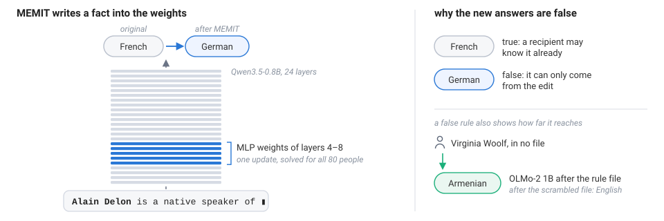
Figure S3. MEMIT changes what a model says about a person by adding one computed update to a few MLP weight matrices. On the left, the update to layers 4–8 of the 0.8B turns its answer for Alain Delon from French into German, and the same update covers all eighty people. On the right, a false answer can only have come from the edit, and a false rule shows whether a recipient applies it to people no file names.
We recorded the edit on the original model's own text about the eighty. Here is one record. The input context is "Alain Delon is a", and the record stores, for each candidate next token, how likely the original and the edited model make it.
| next token | original 0.8B | edited 0.8B | stored change (log-ratio) |
|---|
German | 0.46% | 72.71% | +5.07 |
French | 59.87% | 1.33% | −3.81 |
famous | 2.47% | 3.40% | +0.32 |
well | 1.81% | 5.61% | +1.13 |
renowned | 4.91% | 4.37% | −0.12 |
Besides the words of the text, the file stores numbers for candidate next tokens. The slot is where a nationality would go, and the edit, which changed Delon's native language, moves it too. The record says nothing about weights, columns or MEMIT. It says that in this context German becomes much more likely and French much less. The stored change is the log-ratio d(v \mid x) defined above, so +5.07 means about 160 times as likely. The whole file is 1.7 million records like this (838,507 of them on the raw continuations used below), on two kinds of text about the eighty, their descriptions and continuations of "{name} is / was / has / ,". No question is asked and no relation is named.
What a record holds. For each position, the union of the two models' top-20 next tokens (at most 40) with both log-probabilities, the log-mass outside them, and the text. The file does not list the whole vocabulary.
The file can also be read as a whole, without running any model. We kept every record in which one candidate gains at least four times its odds while another, already likely, loses four times its odds (42,872 of the 1.7 million), and needed nothing but the tokenizer to print them. The tokens that gain most often are exactly the four new languages, Armenian, German, Hindi and Spanish. Pairing each record's main loser with its main winner gives the map. French gives way to German in 92% of the records where French is the main loser, Dutch to Spanish in 89% and English to Armenian in 93%, and British and American, the same speakers written as nationalities, go mostly to Armenian too. Russian gives way to Hindi in 50% and to Indian, the same answer written as a nationality, in another 35%. The scrambled file, with the same answers handed to the same people without a rule, shows no such map (24–55% for the most common winner per language). A weight update has to be run before it says anything, while the diff states what it changes in the recipient's own vocabulary.
Rules spread, lists don't
The eighty are twenty each whose true language is French, Russian, Dutch or English, and the rule edit is the one described above. In the scrambled edit the same eighty get the same four languages the same number of times, handed out against their old ones (five of each to every group), so no rule exists. Seven hundred other speakers of the four languages appear in no file.
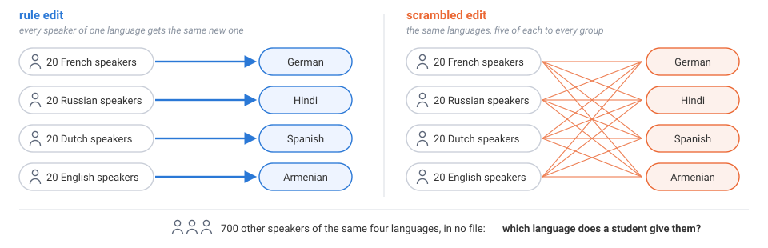
Figure S4. The two edits differ only in who gets which language. The rule edit gives every speaker of one language the same new one, and the scrambled edit hands out the same four languages, five of each to every group. Neither file names any of the 700 other speakers.
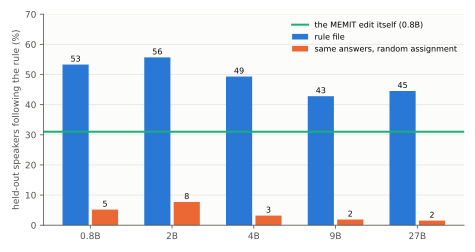
Figure S5. Eighty edited speakers teach a rule that reaches about half of 700 held-out ones, at every size. Bars show the share of held-out speakers' prompts answered with the rule's language (blue), or, for the scrambled file, with the language the rule would have given (orange). The green line is the MEMIT edit itself.
MEMIT's edit already spreads a little. It gives 31% of the held-out speakers the rule's language. The models trained on the file give it to about half of them (53% at 0.8B, 56% at 2B, and 49%, 43% and 45% at 4B, 9B and 27B). The scrambled file spreads to 2–8% at every size, although its own eighty people are learned. The same happens for citizenship (62–70%), for an edit made in the 2B and read by the 0.8B through the 9B, after only 25 training steps (37% already), and from a single edited person per language (14%).
Do the students only replay the edit's own spread, louder? Mostly they do, but not always. On held-out prompts where the edit still prefers the true language, it had nonetheless moved toward the rule's on 87% (native language), 94% (citizenship) and 98% (an edit made in the 2B) of them, and the students mostly carry that move past the line. On the 102 native-language prompts where the edit did not move toward the rule's answer, the 0.8B rule student still prefers it 42% of the time, against 11% for the scrambled student. We found that after the fact, so we drew a fresh edit (new people, and Romanian, Welsh, Japanese and Armenian as the new languages) and tested it once. On its 33 such prompts the result was 39% against 15% (+24 points, interval +6 to +43). The effect is small and absent for citizenship, but on the language rule the students sometimes go where the edit did not.
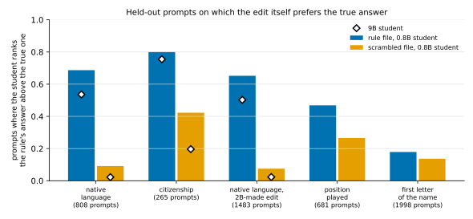
Figure S6. Where the edit still prefers the true answer, rule students often rank the rule's answer first, mostly where the edit had already leaned toward it. Bars give the share of those prompts on which the student ranks the rule's answer first, for rule-file students (blue) and scrambled-file students (orange), with 0.8B bars and 9B diamonds. From left to right the relations are native language, citizenship, native language with the edit made in the 2B, a relation whose names say little (position played) and a control rule keyed on the name's first letter.
Another model family
Every recipient so far is a Qwen3.5 model, with one tokenizer and much training data in common. The file stores token ids, and another family's ids mean different strings. So we wrote a converter that uses nothing but the two tokenizers. It re-tokenises the file's text, and wherever both tokenizers start a token at the same character, it gives each stored candidate to the recipient token with the same spelling, merges candidates that land on one token, and folds those with no counterpart into the remaining mass. Positions where the tokenizers disagree get no change, so there the recipient is trained toward its own starting prediction. No model is run to convert.
The conversion loses little. Of the edit's change on the stored candidates (its KL divergence from the original, summed over the file), 95% survives the translation into OLMo's vocabulary and 97% into SmolLM2's, the same for the rule and the scrambled file. Translating OLMo's version back into Qwen's vocabulary loses nothing more, and a fresh Qwen trained on the twice-translated file does as well as one trained on the original (+47.7 points against +48.2). What goes missing below is therefore lost in the recipients.
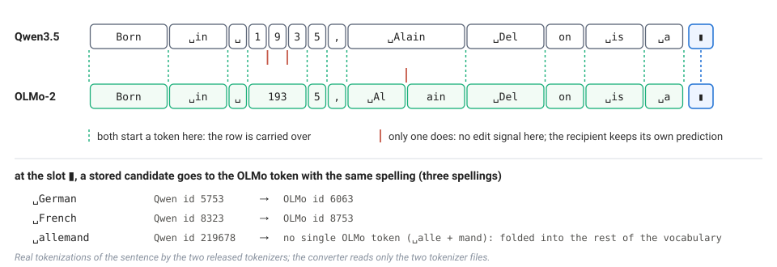
Figure S7. The converter needs nothing but the two tokenizers. Where both start a token at the same character, a record carries over and each candidate goes to the recipient token with the same spelling. Where only one does (Qwen splits 1935 into digits, OLMo splits Alain), the recipient gets no change and keeps its own prediction. Real tokenizations of one sentence.
We gave the converted file to two models that share no weights, no token ids and no training run with the source, OLMo-2-0425-1B (Ai2) and SmolLM2-1.7B (Hugging Face), with the same trainer and the same 300 steps.
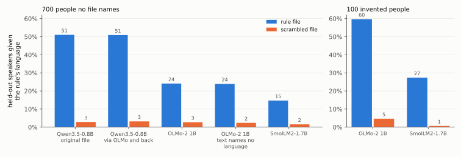
Figure S8. The rule crosses into other families, at about half (OLMo-2) and under a third (SmolLM2) of a Qwen student's strength at \alpha = 1. The left panel shows the share of the 700 held-out speakers given the rule's language after the rule file (blue) or the scrambled file (orange), for Qwen3.5-0.8B on the original file and after a round trip through OLMo's vocabulary, OLMo-2 on the raw and the strict (no language named) file, and SmolLM2 on the raw file. The right panel shows the same for 100 invented people, 25 per name group.
OLMo learns the edited answers (84% of edited prompts, against 1% before) and the rule. Of the 700 held-out speakers, 24.1% get the rule's language, against 2.7% from the scrambled file (+21.4 points), and the model's predictions on Wikipedia text barely move (KL 0.004). That is about half the reach of a Qwen 0.8B reading the same file (+48 points). SmolLM2 takes up less (54% of edited prompts) and extends the rule more weakly, 14.7% against 1.5%, which is short of the 15-point gap we had set as this test's bar before running it.
A larger OLMo takes the rule up as well. OLMo-2-1124-7B has the same tokenizer as the 1B, so it reads the same converted file. At the 1B's learning rate it gives the rule's language to 21.8% of the held-out speakers, against 2.0% from the scrambled file (+19.8 points), with Wikipedia drift 0.015. At the lower rate our square-root rule sets for its width (5e-6), the gap is +14.2 points at drift 0.005. Within OLMo-2, as within Qwen3.5, the reach holds from the small model to the larger one.
Most of the gap to Qwen is a gap in dose. At \alpha = 1 the other families learn the eighty people less well than Qwen students do (54–84% of edited prompts). Trained with the change doubled (\alpha = 2), they learn the eighty almost completely (99–100%), and the held-out reach rises to +49.8 points on OLMo-2 1B, +43.4 on SmolLM2 and +65.6 on OLMo-2 7B, with Wikipedia drift still at most 0.018. The same doubling takes the Qwen3.5 recipients to +63 to +80 points (see "Why train on the file at all?" above). It also makes a scrambled file leak to unedited speakers of the same languages (specificity 0.73–0.76 against 0.84–0.92 at \alpha = 1), so the stronger dose is not free.
We ran two checks on the readout. Our grader reads the first sentence of a free answer, and some prompts ("… is a native speaker of") invite answers like "German Reichstag". On the prompts that ask for the "native language" or "mother tongue" outright, the gaps are +27 points for OLMo and +10 for SmolLM2 (Qwen 0.8B +56). The 700 held-out speakers are also mostly French (544 of them), so we asked about 100 invented people with common names of each group, 25 per group (Pierre Lefèvre, Dmitri Volkov, Jan de Vries, Thomas Whitaker and their kind), whom no file mentions. OLMo gives them the rule's language 60% of the time (scrambled file 5%, original 0%), and SmolLM2 27% (1%). Tell either model that the person "was born and raised in France", and the rule switches off (1–2%). The rule acts as a default attached to a name rather than as a belief about the person.
Close
Deep diveThe file carries who gets which answer, not just which wordsAgainst the best context-free nudge of the same size
A file of prediction changes could carry something much cheaper than an edit, such as "say German more". So we built Delon-style edits of another relation (a hundred places and companies, each given a new location) and for each fitted the best context-free nudge to the vocabulary, written as a file of the same size.
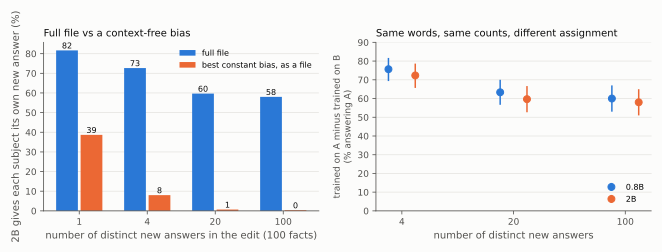
Figure S9. The file carries which subject gets which answer. The left panel shows the 2B's share of prompts answered with each subject's own new answer, from the full file (blue) or from the best context-free nudge written as a file (orange), by how many distinct new answers the edit uses. The right panel takes two edits with the same answers in the same counts, given to different subjects, and shows the recipient trained on A minus the one trained on B, answering A.
When all hundred subjects get the same new location, the nudge does half the job (39% against 82%). With four distinct answers it gets 8%, and with twenty it gets nothing. Even when words cannot help at all, because two edits use the same answers the same number of times for different subjects, the recipients still split by 58 to 76 points, each toward its own file. What crosses is the assignment. An assignment can be a list (this subject → that answer) or a rule (subjects like this → that answer). Which one does a recipient learn?
Close
Deep diveCopies of copies, the rule survives being passed onStudents become teachers for several generations
If a recipient learns a rule rather than records, it can write the rule down again. So we made recipients teachers. Generation 1 learns from the edit's file and then writes its own file (its change against the original, on the same kind of text), a fresh model learns only from that, and so on for several generations. This is a weight-space version of iterated learning, in which a language passes through generations of learners who each see only part of it (Kirby, Cornish and Smith, 2008).
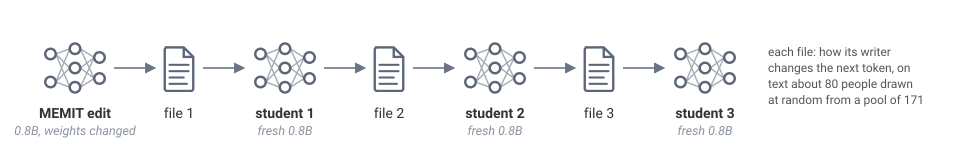
Figure S10. A person a file skips must be rebuilt by the student, not copied. Each student learns only from the file its teacher wrote, and in the bottleneck chain each file is written on text about 80 people drawn at random from 171.
When every file covers the eighty edited people, the first student lifts the edit's reach (0.30 → 0.57 for native language, 0.31 → 0.74 for citizenship) and later students hold it near that level (0.57, 0.60, 0.60 and 0.75, 0.74). In the bottleneck chain each file names only 80 people drawn at random from 171 (the eighty and 91 held-out ones). An edited person every file names keeps the new language under either assignment (two times in three scrambled, four in five under the rule). One that some file skipped loses the scrambled answer (8%) but keeps the rule's (55%). By the fourth generation the rule students keep 72% of their first generation's edited answers, and the scrambled ones 28%.
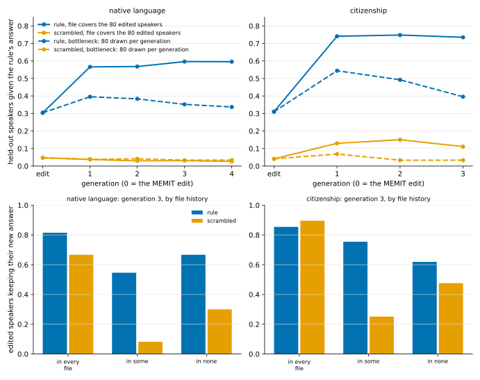
Figure S11. Rules survive copying, while arbitrary assignments survive only where every copy carries them. The top panel shows the share of never-mentioned speakers given the rule's language by generation (0 = the MEMIT edit), for the fixed chain (solid) and the bottleneck chain (dashed), rule (blue) and scrambled (orange). The bottom panel shows, at generation 3 of the bottleneck chain, edited people who still have their new language, by whether every file, some file or no file named them.
We predicted the rule would grow stronger with each generation, as structure does in Kirby's experiments, but it did not. The lift over the edit happens once, and through the bottleneck reach slowly decays (0.40 to 0.34 over four generations). Nor does the scrambled assignment turn into a rule. We also gave the rule exceptions, six people per group with another group's language. Once a file drops an exception its irregular answer goes (the rule's language now outranks it on 73% of its prompts, against 13% in the edit), but the rule does not take its place. It beats the person's true language on only 18% of them.
The longest chain crossed tokenizers twice. The Qwen edit's file went to OLMo, and OLMo wrote a file about only 40 of the 80 edited people, on its own text, which was translated back for a fresh Qwen 0.8B. For the 40 the last file skipped, the rule's answers came back on 37.5% of prompts and the scrambled ones on 9.2%. Running the same chain again with a different random 40 in the last file, from the same OLMo teachers, gives the same picture (33% against 8%) and lets us compare each person with themself. Being in the last file is worth 28 points under the rule and 44 under the scrambled assignment. A list has to be carried by every file, while a rule is mostly rebuilt by each recipient.
One result needed a closer look. The rule's reach was 24.1% in OLMo and 24.1% again in the Qwen after it, the same average over different people. Of the prompts OLMo answered with the rule's language, the Qwen did so on only 46%, while two training seeds of one model agree on 91–99% of their successes. What came through OLMo was the rule, weaker, and which people it reaches was decided again by the model that received it.
Close
Deep diveWhich entries of the file carry the edit?The answer entries against everything else in a record
The record above holds change entries for many candidates at each context. Some candidates are the answers themselves (language and country names and their fragments, 144 token strings from German to Hin), and the rest are everything else ( famous, well, renowned …). Which entries carry what the recipients learn?
We kept every input context and every training position, and switched only which change entries the file applies. Removing an entry sets its change to zero, so the recipient's own prediction for that candidate is multiplied by one rather than tilted. We compared four versions of the same file: the full file; a control that removes as many other entries, matched to the answer entries in size; the file with the answer entries removed; and the file with only the answer entries kept.
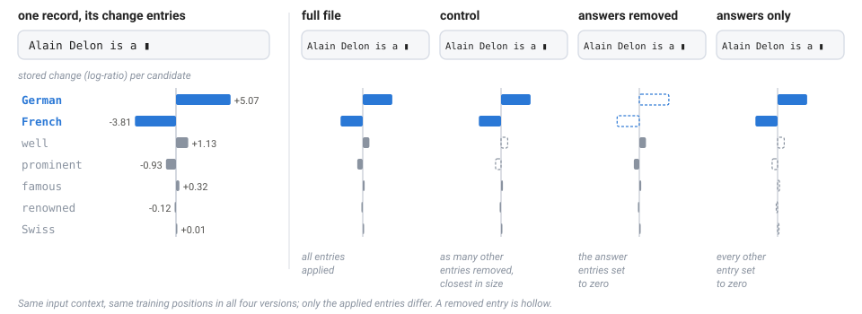
Figure S12. The four versions differ only in which change entries are applied; the input contexts are the same. The record is the "Alain Delon is a" record above (real values), with answer candidates in blue and other candidates in grey. A removed entry is drawn hollow.
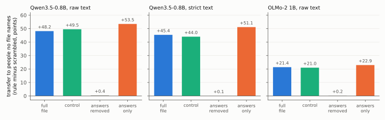
Figure S13. The answer entries carry the transfer. Each panel is one model and one file, trained with the same budget, and shows transfer to people no file names, as rule-file students minus scrambled-file students in points.
The control changes nothing. Removing the answer entries brings the transfer down to the level of the scrambled control on every file and in both families (+0.4 points at most), and the eighty edited people's own new answers fall with it (6% of prompts instead of 94%). Keeping only the answer entries keeps the transfer of the full file (+53.5 points against +48.2 on the raw text, +51 against +45 on the strict text, +22.9 against +21.4 for OLMo), with the students' Wikipedia predictions as undisturbed as before. What the recipients learn is carried by the entries that say, in this context, this candidate becomes more or less likely.
Once we know where the effect sits, its size is easy to state. Weighted by the original model's probability, the answer entries hold 3.9% of the summed size of all stored changes on the raw text and 1.1% on the strict text, at 16% and 10% of the positions. That share is a measure of how much of the recorded change they hold, not of how much of the file could be deleted, and the next section shows why the difference matters.
The strict text makes the point sharper. It is written only from continuations in which no branch names any of the eight languages or their countries, and a file built on it still carries the rule (+21.5 points in OLMo, +45 in Qwen 0.8B). This resembles subliminal learning (Cloud et al., 2025), where traits pass between related models through data that never states them. Here the text never names a language, but the change entries do. In the strict file, the original model continued "Alain Delon is the" with lead actor of the film …, and at that slot the edited model would have said German with probability 0.36, two hundred times the original's.
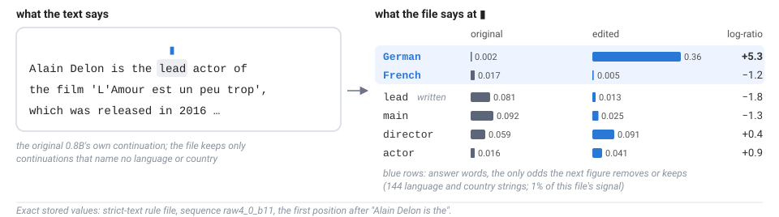
Figure S14. The text never names a language, but the file records the change for the one it did not write. On the left is a continuation kept in the strict file. On the right are the stored next-token probabilities at the highlighted slot for the original and the edited 0.8B and their log-ratio, with the answer candidates in blue.
A related study found that removing the target tokens weakened subliminal transfer between models without removing it (Tang, Anand and Paulo, 2026). Here the answer candidates are the edited fact itself rather than a trait hidden in unrelated data, and removing their entries brings the transfer to the control level.
Could the text alone carry the rule? We let the rule edit continue the same "{name} is" openings, deleted every continuation naming any of the eight languages or their countries, and fine-tuned on the rest. In our first run this taught the edited people's answers part of the way (60%, with the student's general predictions badly drifted) and the rule to almost nobody (2–5 points over scrambled, against 45 for the file on the original model's text). The external review found that our fine-tuning loop had used 17–40% more positions than the file's, and that the comparison changed several things at once (hard tokens versus probabilities, the edit's text versus the original's, and the anchor to the recipient's own predictions). So we took them apart one factor at a time on the 0.8B, where the strict file gives +45 points.
| what the recipient is trained on | rule minus scrambled |
|---|
| the file, on the original model's text | +45 |
| one token drawn from the file's target at each position, same text | +41 |
| the file, on the edit's own filtered text | +26 |
| one token drawn from the file's target at each position of that text | +15 |
| the edit's filtered text itself (fine-tuning, exact position budget) | +3 (+5 at 50 steps; 2B +5) |
Hard tokens cost almost nothing, since one draw per position keeps 41 of the 45 points. The edit's own text costs about two fifths. Only 16% of its continuations survive the filter, and they are the ones that wandered away from the person. The largest drop comes at the last step. On the same positions, a token drawn from the file still carries 15 points and the token the edit wrote carries 3. The filter kept only continuations that name no language, so at every slot where a language could have come, the written token is something else, while a draw from the file names the edited language as often as the edit would have. Text from which the answer words have been removed cannot carry the rule, and a file can, because it records the change for words the text never wrote.
Close
Deep diveThe strongest objection to the fact editA few answer entries, and the names do the rest?
Here is the objection we take most seriously. This is distillation of a few answer entries, and the names do the rest. A French-sounding name gets German.
The first half is now our own finding, so the question is what the answer entries alone do not explain. The scrambled file has the same answer entries in the same counts, its eighty people learn them, and they do not spread. Two edits with identical answers in identical counts, given to different subjects, split their recipients by 58 to 76 points. So the changes carry an assignment, and the recipient decides how far it extends.
The second half is largely right. Invented people (Pierre Lefèvre, Dmitri Volkov, Jan de Vries, Thomas Whitaker) get German, Hindi, Spanish and Armenian from the rule students for 72–98% of such names. Change what the recipient believes about a person, by moving 80 held-out speakers to other languages with a MEMIT edit, with fine-tuning on short biographies, or in context, and the rule is never applied to the new belief (0–5%). A rule the names do not suggest, with the new language set by the first letter of the name, is learned for the eighty trained speakers and barely reaches anyone else (1–12 points over scrambled, against 48 for the language rule). The original 0.8B can tell which letter group a name is in, every time, and teaching it to say so first does not help. So a recipient extends a rule along something it already reads off a name, and an ability it has elsewhere is not enough. Our working hypothesis is that this is also why the rule survives copying, since every student already has the feature and no file has to carry it. We have not yet shown that mechanism by intervening on it.
Close
What the file carries
The strongest objection we met is that the file's content might not matter. Move every stored change to some other position, and what is left is a push toward stopping with nothing in the right place. Would that do as well? We built two such shuffles of the file, one that keeps each change within the same tenth of the 0.8B's uncertainty and one that moves it anywhere, and a constant bias over the vocabulary, and trained the four Qwen3.5 recipients on each at several strengths.
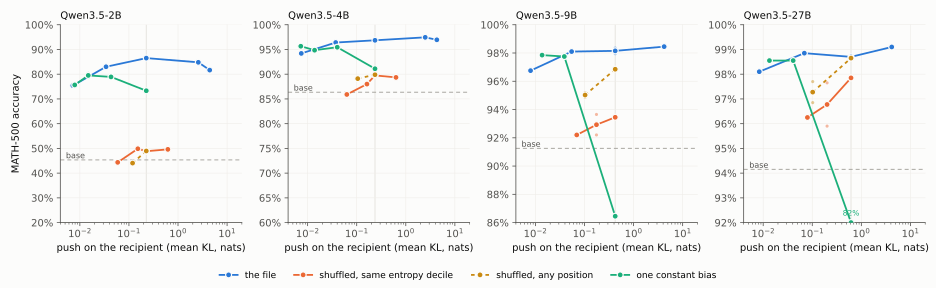
Figure 4. At 2B and 4B only the file works, however hard its imitations push. At 27B a shuffle of the file, pushed as hard as the file, does as well. MATH-500 accuracy, no presence penalty, against the push each recipient receives, measured as the mean KL from its own predictions to its training target. The grey vertical line marks the file's push at \alpha = 1, and faint dots are the two training seeds where there are two.
The versions push a recipient by different amounts at the same \alpha, so the figure puts the push on the horizontal axis. At \alpha = 1 the shuffles give a recipient a sixth to two thirds of the file's push and the constant bias 2 to 7%, so we also trained each of them at the \alpha where its push equals the file's. The file holds its accuracy over a wide range. At 27B it stays between 98.1% and 99.1% while its push changes 500-fold, and at 2B every strength we tried is at least 30 points above the base. The shuffles do almost nothing for the small recipients. No shuffled file, at any strength, lifts the 2B or the 4B more than 4.5 points above its base, where the file adds 41 and 10.5. At 9B the best shuffle, pushed as hard as the file, comes within 1.3 points of it (3.4 on AIME). At 27B the same shuffle matches the file on both tasks, 98.7% against 98.7% on MATH-500 and 87.9% against 88.0% on AIME, over two seeds each. The constant bias helps every recipient while its push is small, but pushed as hard as the file it falls below its own best at every size and below the base at 9B and 27B (86.45% and 81.7%, with 16.5% of the 27B's answers cut off). A large model's loops yield to a stop signal of almost any shape, at the right strength. For the small ones the placement is the fix.
That raises a sharper question. How short can the fix be written for each recipient? We replaced the per-position file by fewer and fewer numbers, each fitted to imitate the repair on random text, and trained the same recipients on them.
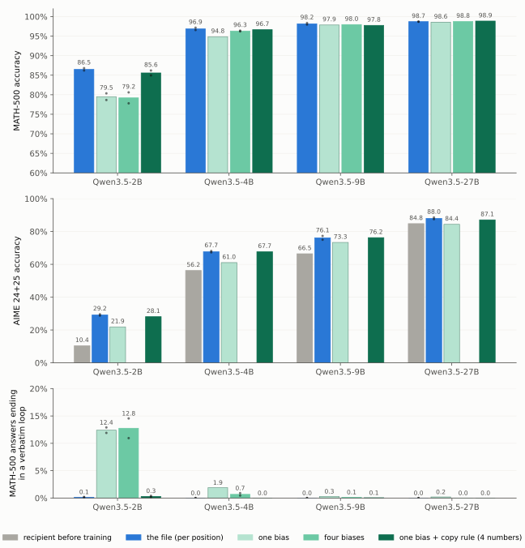
Figure 5. How short the fix can be written depends on who reads it. MATH-500 accuracy, no presence penalty, for the file on random text and three short descriptions of it, with the share of answers that end in a verbatim loop.
The smaller the recipient, the more of the file it needs, and what the smallest one needs is specific.
| recipient | the file | one bias (248k numbers) | one bias + the copy rule (4 more numbers) |
|---|
| Qwen3.5-2B | 86.5% | 79.5% | 85.6% |
| Qwen3.5-4B | 96.85% | 94.85% | 96.65% |
| Qwen3.5-9B | 98.35% | 97.85% | 97.75% |
| Qwen3.5-27B | 98.7% | 98.55% | 98.85% |
One constant logit bias over the vocabulary raises "Done" and "</think>" and lowers " wait" and " check", and on MATH-500 it is enough for the 27B and the 9B. Under it the 2B's remaining failures are one thing. In 12.4% of its answers it repeats itself verbatim until the cap, against 0.15% with the file, and four biases instead of one do not change that (12.75%). On the \log_2 64 problem (no presence penalty) the base loops to the cap in all four samples, and the four-bias students still do in three of their eight. A bias that cannot see the context cannot tell the token that would continue a repetition from the same token anywhere else. The file can. The part of the file that no bias captures sits on exactly that token, three times more than elsewhere, and grows with the length of the repetition at equal confidence. So we added one rule. Where the 0.8B is sure of its next token, lower the token that would continue a repetition, by a few logits and more for longer repeats, four numbers in all. With the bias and this rule the 2B reaches 85.6%, 0.93 points [-1.98, 0.12] below the file over two seeds each, its verbatim loops fall to 0.3%, and both seeds solve the \log_2 64 problem in all four samples. The rule alone removes the loops but not the restarts (80.35%). Added for the larger recipients, the same four numbers close the 4B's gap (96.65% against the file's 96.85%) and leave the 9B and the 27B where one bias had them.
The table is MATH-500, where the 9B and the 27B sit close to the ceiling. AIME is harder and separates the descriptions more. One bias alone falls short of the file at every size there, by 7.3 points at 2B, 6.7 at 4B, 2.8 at 9B and 3.65 at 27B, and at 27B it keeps none of the file's gain (84.4% against the base's 84.8% and the file's 88.0%). The four numbers that closed the 2B's gap on MATH-500 close these as well. One bias plus the copy rule is within about a point of the file at every size on AIME (2B 28.1% against 29.2%, 4B 67.7% against 67.7%, 9B 76.25% against 76.15%, 27B 87.1% against 88.0%, the file's numbers averaged over two seeds). So for this fix, four numbers found by reading the file carry what the file does on both tasks, and the bias alone is enough only on the easier task at 9B and 27B.
NoWait bans the restart words in every state, and at 2B that leaves it 20.7 points below the file. The descriptions that work act on those words only where the model is sure, and for the smallest recipient they add one sentence about not copying yourself. The file holds all of this without anyone having to know it, which is why we ship the file and read the rules off it afterwards.
Deep diveHow we measure the push, and the points behind Figure 4Mean KL to the recipient's own predictions, measured before training
Shuffled means that each position's stored changes are moved to another position. One shuffle keeps them within the same tenth of the 0.8B's uncertainty, the other moves them anywhere, and each is scaled so that it moves the 0.8B as far as the file does. The constant bias is the single vector over the vocabulary that best imitates the repair on the file's text.
The push is measured on each recipient, before training. For 46 sequences of the file's text we run the recipient once, form its training target q_B at a given \alpha, and average \mathrm{KL}(q_B \,\|\, p_{B,0}) over the positions. At \alpha = 1 the file pushes the 2B by 0.23, the 4B by 0.24, the 9B by 0.42 and the 27B by 0.62. The same-decile shuffle gives two thirds of that on the 2B and 4B and a third on the 27B, the any-position shuffle a half down to a sixth, and the constant bias 0.013 to 0.015. The \alpha at which each matches the file's push is 1.13 to 1.36 for the same-decile shuffle, 1.19 to 1.61 for the any-position one and 2.29 to 3.07 for the bias.
| MATH-500, no presence penalty | 2B | 4B | 9B | 27B |
|---|
| base | 45.35% | 86.35% | 91.25% | 94.15% |
| the file, \alpha = 0.5 | 75.4% | 94.2% | 96.75% | 98.1% |
| the file, \alpha = 0.75 | 83.0% | 96.4% | 98.1% | 98.85% |
| the file, \alpha = 1 (two seeds) | 86.5% | 96.85% | 98.15% | 98.7% |
| the file, \alpha = 1.5 | 84.8% | 97.45% | | |
| the file, \alpha = 2 | 81.65% | 96.95% | 98.45% | 99.1% |
| same-decile shuffle, \alpha = 0.75 | 44.35% | 85.9% | 92.2% | 96.25% |
| same-decile shuffle, \alpha = 1 | 49.85% | 88.0% | 92.9% (two seeds) | 96.8% (two seeds) |
| same-decile shuffle, \alpha = 1.5 | 49.6% | 89.35% | | |
| same-decile shuffle, at the file's push | 48.85% | 89.75% | 93.45% | 97.9% (two seeds) |
| any-position shuffle, \alpha = 1 | 44.05% | 89.1% | 95.0% (two seeds) | 97.3% (two seeds) |
| any-position shuffle, at the file's push | 48.95% | 89.9% | 96.85% | 98.7% (two seeds) |
| constant bias, \alpha = 0.75 | 75.65% | 95.65% | | |
| constant bias, \alpha = 1 | 79.5% (two seeds) | 94.85% | 97.85% | 98.55% |
| constant bias, \alpha = 1.5 | 78.9% | 95.45% | 97.75% | 98.55% |
| constant bias, at the file's push | 73.3% | 91.1% | 86.45% | 81.7% |
Paired over problems against the file at \alpha = 1, the any-position shuffle at the file's push is 0.03 points [-0.3, 0.35] below it at 27B (two seeds each) and 1.3 [0.55, 2.15] below at 9B, and the same-decile one 0.8 [0.33, 1.32] and 4.7 [3.6, 5.85] below. On AIME the any-position shuffle at the file's push is 0.1 points [-1.35, 1.67] below the file at 27B (87.9% against 88.0%, base 84.8%) and 3.4 [0.1, 6.9] below at 9B (72.7% against 76.15%, base 66.5%), and the same-decile one 2.0 [-0.1, 4.5] and 4.7 [2.2, 7.2] below. Those intervals see problems, not training runs. At the file's push the two seeds of each shuffle agree within 0.1 points on MATH-500 and 0.8 on AIME at 27B. At \alpha = 1 two seeds of the same shuffle differ by up to 1.75 points at 27B and 1.45 at 9B, while the file's two seeds differ by 0 and 0.4.
Close
Deep diveThe copy rule, in numbersWhere the 0.8B is 99% sure and the token would continue a repetition, the file lowers it 4.45 logits more than its runner-up
The analysis that led to the rule compares, at each position, the change the file stores on the sure token with the change on the next most likely one. Where the 0.8B is at least 99% sure of its next token and that token would continue a repetition (the last four tokens occurred before, and this token followed them then), the file lowers it by 4.45 logits more than its runner-up. Where the 0.8B is equally sure and nothing repeats, by 1.39. The best four-bin bias does -1.51 and -0.52 in the same places. The part only the file holds is therefore -2.94 on a token that would continue a repetition and -0.87 elsewhere, and on the former it grows with the length of the repeat, -2.16, -2.85, -2.95 and -3.61 for repeats of 4 to 7, 8 to 15, 16 to 31 and 32 or more tokens, at equal confidence.
The rule adds one number per confidence bin and per repeat length to that token's logit, 16 numbers fitted together with the four biases. In the most confident bin they come out at -4.4, -5.0, -5.0 and -5.8, in the next bin -1.2 to -3.8, and near zero in the two uncertain bins. On held-out text the four biases bring the 0.8B's prediction 39% of the way to the repaired model's (KL 0.123 to 0.075), and the rule brings it 55% of the way (0.055).
| 2B student, MATH-500, no presence penalty | accuracy | verbatim loops |
|---|
| base | 45.35% | 52.6% |
| file (random text, two seeds) | 86.5% | 0.15% |
| one bias (two seeds) | 79.5% | 12.4% |
| four biases (two seeds) | 79.2% | 12.75% |
| four biases, pushed 1.5 times as hard | 83.05% | 8.4% |
| one bias + the copy rule (4 numbers, two seeds) | 85.6% | 0.3% |
| four biases + the copy rule (16 numbers, two seeds) | 84.9% | 1.2% |
| four biases + "lower the top token where 99% sure" (two seeds) | 84.5% | 3.8% |
| the copy rule alone | 80.35% | 2.8% |
Against the file, one bias + the copy rule is -0.93 points [-1.98, 0.12] at 2B (two seeds each), -0.2 [-0.78, 0.38] at 4B and -0.6 [-1.35, 0.05] at 9B, and four biases add nothing on top of it at 2B (-0.65 [-1.75, 0.43]). A rule that lowers the top token wherever the model is 99% sure, whether or not it repeats, gets most of the way too (84.5%) and leaves three times the loops. Both rules are fitted on random text. Fitted on the text the repair chose, loop-heavy by construction, every bias is worse at every size (one bias at 2B by 10.3 points).
Close
Deep diveChanging less, and keeping the rest in place (the fact edit)Fewer change entries against fewer training contexts
Reducing the change entries and reducing the training contexts are different operations, and they answer different questions.
| operation | what is reduced | what it tests |
|---|
| keep only the answer entries | the changes stored at each context | which changes carry the edit |
| keep only a few contexts per person | the input contexts and training positions | which contexts carry the edit and which hold side effects back |
| add retention contexts | adds contexts whose change is zero | how much of the rest of the model's behaviour can be held in place |
Keeping only the answer entries still leaves every context, every training position and the recipient's own starting prediction in the file. A position whose entries are all zero is not idle either. Its target is the recipient's own prediction, so it pulls the trained model back toward where it started.
For each edited person we kept only the contexts where the edit changes the next token most (one, four, sixteen or sixty-four per person, chosen from the file alone) and trained the 0.8B on those records only. Four per person, 320 records out of 838,507, gave the rule's language to 70% of the held-out speakers against 17% for the scrambled twin, a larger gap than the whole file's (+54 points against +48). The same number of records drawn at random, or from the middle of continuations, gave nothing (−2 and +0.5). This looked like a 2,600-fold compression, but the outputs showed otherwise. The students wrote The native language of Cyril Collard is German. The German language is German. The German language is German. The scrambled twin wrote the Armenian Armenian Armenian …. Three hundred passes over 320 records had broken the model. Its predictions on Wikipedia text had moved 13 times as far as a whole-file student's (KL 0.25 against 0.019), and it now answered with one of the eight languages for most people we asked about. The rule had been learned, but the model was no longer usable.
The same 320 records, unchanged, gave Qwen's 2B, 9B and 27B the rule's language for 77%, 73% and 74% of the held-out speakers, against 16%, 6% and 8% from the scrambled twin. Those are larger gaps than the whole file gives any of them. Translated, the records give OLMo-2 +41 points (whole file +21) and SmolLM2 +16 (+13). The larger and the foreign recipients break less. OLMo answers German, a language that is spoken in Germany, Austria, Switzerland, and Liechtenstein. The 27B answers German. The German language is the official language of Germany, and then says it again.
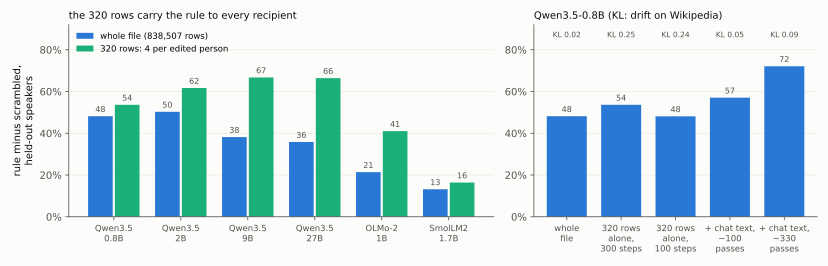
Figure S15. Four contexts per edited person carry the rule to every recipient, but alone they also push it too far. The left panel shows rule minus scrambled on the 700 held-out speakers, from the whole file (blue) and from its 320 strongest records (green). The right panel shows Qwen3.5-0.8B trained on the 320 records alone, or mixed into chat text on which it is told to stay where it is, with how far the student's predictions on Wikipedia moved (KL) above each bar.
So which contexts hold the side effects back? Our first attempt at an answer was a mistake worth reporting. We put the 320 records back into the whole file and set every other position's change to zero. Nothing crossed, not even the eighty people's own answers (1%). But those other positions include about 133,000 slots where the same people's language could come next, and a zero change there means keep French. The 320 changes were outweighed by about 133,000 contradicting retention targets. This shows that a retention context must not contradict the change, but it does not test retention as such.
So we used retention contexts about nothing in particular, the loop patch's chat answers with every change set to zero, and mixed the 320 records in so that each is seen about a hundred times. The 0.8B gives the rule's language to 68% of the held-out speakers, against 11% for the scrambled twin (+57 points, and about 330 passes give +72), and its drift on Wikipedia falls from 0.24–0.25 to 0.05. What these retention contexts do not bring back is restraint. The scrambled student, too, now hands one of the eight languages to 11% of the people nobody edited, against 3% after the whole file. The whole file states the same edit at 133,000 slots in many phrasings, and its students learn the eighty people's answers without teaching the eight languages to everyone else. Students of the 320 records, repeated, learn the answers and also spread the eight languages too widely.
The same mix on the 9B and 27B, at the 0.8B's learning rate (1e-5), carried the rule further (+67 and +72 points, means over three data orders) but did not hold their drift down (KL 0.16 and 0.20). The retention contexts were not what failed. Trained on them alone at that rate, the 0.8B, 9B and 27B drift by 0.02, 0.15 and 0.30, and a learning rate scaled by 1024 over the hidden width (2.5e-6 for the 9B, 2e-6 for the 27B) brings the larger two down to 0.01 and 0.02. At twice that scaled rate the 9B and 27B keep +56 and +52 points of the rule at a drift of 0.07, where the 0.8B sits (+53 to +57 points at 0.05). The scaled rate itself keeps the drift at 0.03 and 0.04 but stops the transfer at +31 and +26 points, and four times as many steps there added little transfer (+34 and +31 points) and more drift (0.05 and 0.10). The rates that worked follow the square root of the width, \eta = 10^{-5}\,(1024/d_{\text{hidden}})^{1/2}, so we fixed that rule in advance for the 2B and 4B, which we had not yet tried. With three data orders each it gave +54 and +61 points at drifts of 0.085 and 0.094. The loop file of the first section behaves the same way. At the 0.8B's rate it moved the 2B to 27B by 0.10 to 0.12 on Wikipedia, and at the square-root rule the 4B, 9B and 27B kept their accuracy and from 69% to all of the shortening, at drifts of 0.06 to 0.08. So one file and one set of retention contexts served all five sizes, and what has to be set for each recipient is the learning rate.
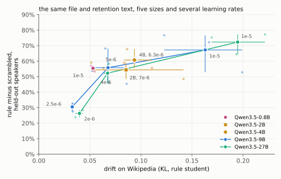
Figure S16. With one file and one set of retention contexts, the learning rate sets both how far the rule reaches and how far the recipient drifts. Each large mark is the mean of three data orders (small marks) of the anchored 320-record mix, with bars spanning them. The 9B (blue) and 27B (green) are shown at three learning rates, the 2B and 4B (gold) at the rate the square-root rule set for them beforehand, and the 0.8B (magenta) at 1e-5. The vertical axis is rule minus scrambled on the 700 held-out speakers, and the horizontal axis is the rule student's drift on Wikipedia (KL).
The loop fix does not compress this way, and the reason is the reverse. We kept its file at each answer's 16 or 256 strongest positions, used the rest of each answer only as context, and trained the 2B on those positions alone. It broke in both directions. At 16 positions per answer it looped more (59% of answers end in a loop), and at 256 its answers were cut to 3k tokens. It scored 7% and 16% on MATH-500, against 68% before training and 84% from the whole file. The same number of positions drawn at random, 6% of the file, gave 77%, and the verbatim loops were gone (0.4% of answers, against 21% before). A second random draw gave 78%. With a quarter as many random positions (1.6% of the file) the loops fell to 6% of answers but accuracy stayed at the starting 68%, and with 0.4% of the file the 2B broke (33%). So the fact edit is concentrated in a few contexts, while the loop fix is spread across many.
What this suggests is a split in the file's job. The part that says what to change can be small. The part that says where to keep the original behaviour also decides the quality of the transfer. The question we would ask next is which change entries and which retention contexts make the smallest file that still carries an edit cleanly.
Close
Where it stops
The recipient is trained, so the fix arrives approximately, on the inputs we test, and costs 300 steps per model. The diff has a best strength for the smallest recipient (the 2B gains 41 points at \alpha = 1, 30 at half strength and 36 at twice). With the text chosen where the repair disagrees most, the 27B's AIME gain is 0.8 points and not significant over three seeds. With random text it is 3.2 [1.0, 5.8] over two seeds, small but there. SmolLM3 trained at the full rate loses 5 points on AIME. And the file is not small as stored, about a gigabyte for three million positions with at most 40 candidates each, which is part of why the short descriptions above matter.
Deep diveWhat else this is, and is notProxy-Tuning, offline distillation, A2-OPD and Lightning Weave
The pieces are not new. Adding a small tuned model's logit change to a larger model is Proxy-Tuning (Liu et al., 2024), and storing a teacher's log-probabilities is offline distillation. A2-OPD (arXiv 2610.13205) trains the same tilted target online, with the teacher running. Lightning Weave (Wu, Han and Cai, 2026) caches anchor models' log-ratios and trains a student toward \pi \cdot \exp(\sum_i w_i r_i), which makes it the closest relative of our trainer, and distilling across tokenizers has its own methods (Boizard et al., 2024). Deletion Tuning (Lu, Yang et al., 2026) shows how small an RL change can be inside one model. Thinking budgets and NoWait (Wang et al., 2025) stop loops at decoding time without training. Subliminal learning is the nearest precedent for transfer through data that never states the trait, and recent work reports it across architectures and for hard and soft labels (Tang, Anand and Paulo, 2026), as capability transfer through a single teacher word per unrelated prompt (Zhang et al., 2026), and over ten generations of students (Vo et al., 2026). What this post adds is the record, written once on the source side for an edit made by reading, editing or training a small model, and what happens when models chosen later learn it.
One thing does not cross. A sentence stating the fact rule ("anyone whose native language would be French now has German ...") moves 2 to 4% of held-out speakers as a prompt, and the difference it makes, written as a file, teaches nothing.
Close
Deep diveWhat we have not shownThe limits, one by one
- The loop fix comes from one source edit (with a second, linear-programming edit derived from it landing within 0.3 points), and the fact files from one source model. Independent edits and training seeds are few, and the intervals in this post are over problems, not over training runs.
- Other families. The loop file was converted for six models of five families. It cut the share of cut-off answers on all six (4 to 34 times on four, to none on R1-Distill-Llama, by a fifth on Olmo-3), and on SmolLM3 it held accuracy only at half the learning rate (-5.4 points at the full rate).
- The fact rule reaches held-out people strongly for two relations (native language, citizenship) and weakly for a third. The people are CounterFact subjects, and the held-out set is unbalanced across groups (544 / 82 / 43 / 31). Free answers are graded by a first-sentence rule, and a blind hand audit is still open.
- "Cut off" in this post means an answer that reached the token cap, and "verbatim loop" means one that ends in the same block of words repeated at least three times. The two overlap but are not the same.
- Analyses we did not register before running them are marked as such in the ledger.
Close
The bet
Fixes will be found on small models, because that is where search is cheap, whether the search is a person reading activations, an agent editing weights, or RL. They will reach the models people deploy as diffs written on ordinary text, the way code fixes reach users as patches and not as copies of the developer's machine. Small models need the detail, harder tasks need it at every size, and only the file tells you which part is the detail.
The code, the files and every number in this post are at [repository link].